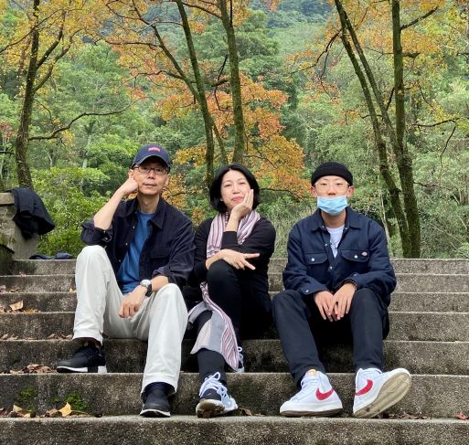

張鈞宇 自我介紹
世新資傳三甲張鈞宇
jason424c@gmail.com
我是張鈞宇現在在重修網頁設計
測試 測試 123
自小生長於一個普通的雙薪家庭，由父母和我三人組成，雖然成員不多，卻讓我們一家三口的感情更加緊密，同時每個人也願意對這個家負起更多責任。在父母每日辛勞的工作下，全家足以衣食無虞，我也能心無旁鶩的學習和成長。爸爸在外交單位服務多年，過去的工作及社會經驗使他養成實事求是的精神而這也是自小在父親身上所學到學著一步步的把事情做對、做好，而非僅僅敷衍了事。媽媽在外商公司上班，瞬息萬變的國際市場中不能墨守成規，唯有隨時保持彈性才能應對每一個不同的情況，她也不忘把這個道理教給我，讓我擁有隨機應變的能力以面對生活中的不確定性。雖然父母的工作屬性不同，但生活的態度都離不開「踏實」這個真理，這也是我們一家的寫照，腳踏實地的完成分內的事、不走捷徑，這便是從小到大的成長過程中，最寶貴且無價的訓練。
學齡前大部分的時間我都由外婆照顧，外公外婆的陪伴讓我學會人生的哲理“要願意不求回報的付出”。這也一定程度的影響了我樂於助人、設身處地替人著想的人格特質。
Apart from being a web developer, I enjoy most of my time being outdoors. In the winter, I am an avid skier and novice ice climber. During the warmer months here in Colorado, I enjoy mountain biking, free climbing, and kayaking.
When forced indoors, I follow a number of sci-fi and fantasy genre movies and television shows, I am an aspiring chef, and I spend a large amount of my free time exploring the latest technology advancements in the front-end web development world.